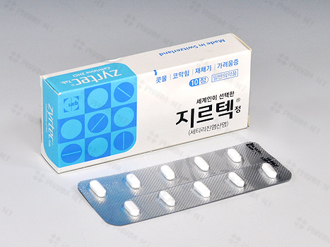

[지르텍]얼마전 약국에가서 '지르텍 제네릭으로 하나 주세요' 라고 말했다.
되돌아온 약사의 질문은
'5500원 짜리랑 2000원 짜리가 있는데 어느걸로 드릴까요?'
'뭐가 다른데요?'
'회사가 달라요'
'하하... 그냥 2천원 짜리로 주세요.'
분명히 지르텍 제네릭을 요구했는데 약사는 5500원짜리 지르텍을 선택지에 다시 올려두고 가격만 공개한채 선택을 요구했다.
내가 가격 보상심리('비싼건 좋은걸꺼야'라는 생각)에 휩쓸려서 5500원짜리를 달라고 하길 기대한것 같다.
그렇지 않으면 어째서 애써 제네릭을 요구한 사람에게 지르텍을 권하겠는가.
내가 본 일반적인 약사들은 이렇지 않다.
하지만 앞으로 이 약국에는 가지 말아야겠다.
* 제네릭(generic)이란?
동일성분약품. 예를 들어 지르텍(zyrtec, 한국UCB)과 알러텍(allertec, 고려제약)은 염산세티리진(세티리진염산염)으로 구성된 동일한 성분/효능의 항히스타민제(알러지약)이다. 지르텍은
이런 제네릭은 약품의 특허보호가 만료되어 다른 제약업체가 동일한 의약품을 만든 것이다. 성분과 효능은 동일하기 때문에 별다른 이유(포장이 예쁘거나 편리하다는등)가 없다면 가격이 저렴한쪽을 택하는게 유리하다.
과거 국내에서는 '카피(copy)약' 이라고 불리며 마치 '가짜약'처럼 나쁜 인식을 갖고 있었지만 지난 2001년부터 제약협회에서도 '제네릭' 이라는 용어를 사용하는것을 권고하며 일반에 알리는 추세다.
다만 약국에서는 가격 때문에 비싼 메이커약(지르텍 같은)을 권하기도 한다.